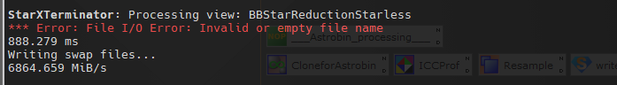

A script to apply Bill Blanshan's star reduction methods.
Note: the script requires StarXTerminator to be installed and therefore the minimal required image size is 256x256 pixel. Please make sure StarXTerminator is set up properly and an AI is chosen before running this script. [more]
Keywords: star reduction, StarXTerminator, Bill Blanshan
[hide]
[hide]
Bill Blanshan published three methods for star reduction in an astronomical image which are so far available as PixelMath expressions: BillsStarReductionMethods_V2.xpsm. A prerequisite is a starless image which needs to be created prior and the name of the starless image has to be provided in the PixelMath expressions. The PixelMath expressions contain parameters which control the strength of the star reduction. The user has to edit the expressions in order to change the parameters.
This script automates the generation of the starless image, let the user choose which star reduction method to use and has the ability to produce a preview showing the effect of the star reduction parameters. The state of the script can be stored as an icon by the "new instance" button and can be used via drag and drop on other images.
[hide]
The target image control allows to choose a main view of an image (either grayscale or RGB) as a target for star reduction. Only views with an image size of at least 256x256 px are listed.
This method is controlled by a single parameter Strength. In the original PixelMath methods this parameter is called S and ranges from 0.5 to 0. The lower S the stronger the star reduction. In this script the Strength parameter ranges from 0 to 1 with the canonical behavior of increasing star reduction with increased strength.
This method does not use the Iterations and Mode parameter and therefore the respective controls are deactivated if this method is chosen.
The halo method is also controlled by the Strength parameter, similar to the transfer method. The star reduction effect increases with increasing parameter value.
The star method is a combination of several methods and is controlled by two parameters: Iterations and Mode. The star reduction effect increases with the number of iterations. The mode is self explanatory.
This method does not use the Stregth parameter and therefore the Strength control is deactivated if this method is selected.
[hide]
In case the selected Target View window contains previews, one of it's previews can be selected from which a series of star reduction images are produced, with varying strength of star reduction. The used parameters are drawn as a signature in each subframe. The following image shows a sample preview output window.
[hide]
In case you run the script but do not see an effect in star reduction, check the console for the following error message from StarXTerminator:
To get rid of this error message, start the StarXTerminator process once. You do not have to run StarXTerminator, the process window can be closed again right away. Afterward the error message should not occur anymore until you close Pixinsight. The root cause is unclear, but under investigation by the author of StarXTerminator.
Copyright © 2022 Dr. Thorsten Glebe